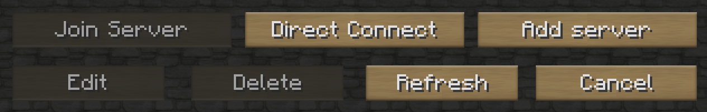
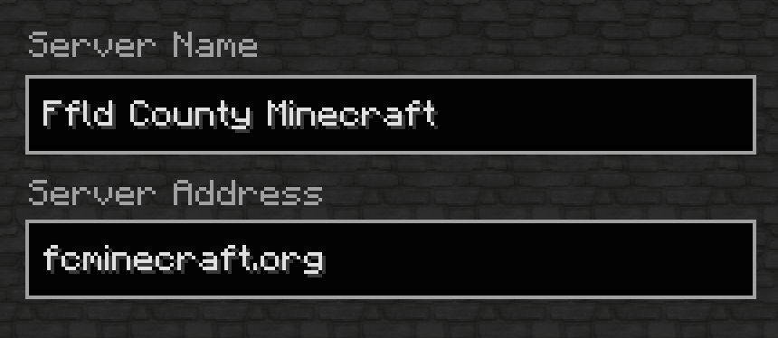
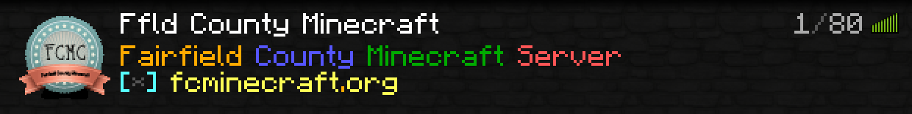

What's New?
{% for post in site.categories.players limit: 1 %}{{ post.title }}
How do I...?
In order to play, you will need a paid Minecraft account and a library card. To be added to the server, go into your local library and ask to be added to the Minecraft server. Once the librarian checks your card, they will add you to the server's "whitelist" and assign you to your town's group.
You will need to add FCMC to your multiplayer list. Once you're in your multiplayer screen, click "Add Server"

On the next screen, name the new server something like "Ffld County Minecraft" and use "fcminecraft.org" as the server address.

Click done and you should then see FCMC in your server list.

Click it, join, and play!
FCMC uses the "Grief Prevention" plugin to allow you to protect your build area. In order to use it, you will need a golden shovel--which we will provide for you! You can easily get one while in the game by typing: /kit claiming. You can do this once per day.
This is a great tutorial on how to use Grief Prevention:
FCMC also uses the Lockette plugin which allows you to safely lock away your valuable inside chests. It's super simple and uses signs. Here's a quick tutorial about that:
FCMC uses the "Stables" plugin for horse and donkeys. It's a very useful plugin that allows you to keep horses and craft saddles, bridles, and nametags without having to search through Nether for them. This very useful tutorial will show you how to use Stables:
By popular demand, FCMC now has survival games! This totally fun plugin probably needs no explanation, but getting to the SG lobby might. There are lots of ways to get around the various worlds in FCMC, but the quickest way to the SG lobby is to do: /warp survivalgames. Once in the lobby, you can choose the game you want by punching the sign for the arena you wish to play in. Once two or more players are present on their pedestals inside the arena, type /sg vote to vote for the game to start. The game will begin to count down and then you're off!
Here's an example of Survival Games gameplay:
We have a lot of tools in place to guard against griefing and rulebreaking, but sometimes it happens. The first thing you should do is become familiar with our rules. They are listed on the right-hand side of this page. There are not a lot of them, but we enforce them so that gameplay is fair, fun, and safe. Take a moment to read them if you haven't yet.
If you have been the victim of griefing or witness bad behavior or language, there are a few ways you can report it. You can send an in-game mail to one of the staff (it's probably best to send it to the admin or one of the builders), you can tell your librarian at your library, you can call your librarian, or you can tell a staff member in chat while on the server.
In order to send mail on the server, use the following command:
/mail send [playername] message.
For example:
/mail jblyberg send Help, I've been griefed!.
Of course, you should include more information than that.
In order to catch the offender, you will need to give as much detail about the problem as possible. In order to figure out who did the griefing, for example, you will need to show a staff member where it happened and approximately when.
We don't often ban players because, on the whole, you're a great group of kids! But sometimes someone decides to go barbarian on us and we have to do what we have to do. The few players that have been banned were banned for griefing or swearing. One or two for unauthorized PvP and bullying. We log everything that happens on the server so if you decide to bash through someone's wall like the Kool-aid guy, we will find you and you will be banned. Also, all chat, sign placement, etc is logged so we know if you've been cursing like a sailor. So your best bet it to never get banned in the first place.
But we are also forgiving. If you have strayed from the path, been banned, and want back in, we would love to have you back, provided you're going to adhere to the rules. The only way to get unbanned is to come in to you library and speak with the librarian about getting unbanned. You'll probably get a little bit of a talking to, but once you've done that, your librarian will email the admin who will then unban you.
There have been a few cases where a server glitch banned a player. If you believe that has happened to you, simply call your library and tell them you that that happened. Be sure to tell them your Minecraft username so they can pass it along to the admin and you will be unbanned. No need to apologize for that!
Currently Online:
Who's on?

Server Rules
- Griefing or swearing will get you banned.
- PvP is only allowed in these locations:
- Nether (no ambushing)
- Survival Games arenas
- Anywhere in Panem at any time
- Bullying will get you banned immediately.
- No cheating with client-side mods.
- Spamming of any kind will land you in jail.
Server Staff
Archive
-
{% for post in site.categories.players %}
- {{ post.date | date_to_string }} » {{ post.title }} {% endfor %}